内容介绍：setting up the project’s configuration, loading images, loading sounds, building a game for more than one screen resolution, and managing touch events.
这个游戏是双人游戏。
游戏特征：
接下来将使用Xcode创建所有工程：
更新AppController.mm和RootViewController.mm：
Go to AppController.mm and inside the (BOOL) application:(UIApplication *)application didFinishLaunchingWithOptions:(NSDictionary *)launchOptions method below the section where the EAGLView *__glView object is instantiated, write this line: [__glView setMultipleTouchEnabled:YES];（支持多点）
Now go to RootViewController.mm and look for the shouldAutorotateToInterfaceOrientation method. Change the line inside the method to read:return UIInterfaceOrientationIsPortrait( interfaceOrientation );
Finally, a few lines below in the supportedInterfaceOrientations method change the line inside the conditional to: return UIInterfaceOrientationMaskPortrait;
打开7341_03_RESOURCES.zip。里面有两个文件夹分别是hd和sd，分别用于retina屏和非retina屏。将这两个文件夹拖动你工程的Resources文件夹。
Go back to Xcode. Select the Resources folder in your project navigation panel. Then go to File| Add Files to Air Hockey.
In the File window navigate to the Resources folder and select both the sd and hd folders. This is very important: Make sure Create folder references for any added folders is selected. Also make sure you selected Air Hockey as the target. It wouldn’t hurt to make sure Copy items to destination… is also selected. Click Add.
It is very important that references are added to the actual folders, only in this way will Xcode be able to have two files with the same name inside the project and still keep them apart; one in each folder.
修改AppDelegate.cpp类。向applicationDidFinishLaunching方法，pDirector->setOpenGLView( pEGLView)之下添加：
CCSize screenSize = pEGLView->getFrameSize();
CCEGLView::sharedOpenGLView()->setDesignResolutionSize(768, 1024, kResolutionExactFit);
if (screenSize.width > 768) {
CCFileUtils::sharedFileUtils()->setResourceDirectory("hd");
pDirector->setContentScaleFactor(2);
} else {
CCFileUtils::sharedFileUtils()->setResourceDirectory("sd");
pDirector->setContentScaleFactor(1);
}
setDesignResolutionSize表达了，我设计游戏时使用的分辨率是768 x 1024。即所有的定位与字体都相对于这个分辨率。
CCFileUtils会先在rces| sd (or hd)中寻找资源，如果找不到，再在Resources中找。即两个分辨率都一样的文件可以放在Resources中，不用重复两份。例如声音文件。
将.wav拖动到你的工程的Resources文件夹。Then go to Xcode, select the Resources folder in the file navigation panel and select File | Add Files to Air Hockey. Make sure the Air Hockey target is selected. Add the wav files.
在AppDelegate.cpp顶部添加：#include "SimpleAudioEngine.h"。在USING_NS_CC下添加：using namespace CocosDenshion;。
在applicationDidFinishLaunching方法，上一节添加的内容之下添加：
SimpleAudioEngine::sharedEngine()->preloadEffect(
CCFileUtils::sharedFileUtils()->fullPathFromRelativePath("hit.wav") );
SimpleAudioEngine::sharedEngine()->preloadEffect(
CCFileUtils::sharedFileUtils()->fullPathFromRelativePath("score.wav") );
加载声音很费时，因此尽早做。
CCSprite我们需要一些额外的信息，因此扩展CCSprite。
GameSpriteGameSprite.h：
#ifndef __GAMESPRITE_H__
#define __GAMESPRITE_H__
#include "cocos2d.h"
using namespace cocos2d;
class GameSprite : public CCSprite {
public:
CC_SYNTHESIZE(CCPoint, _nextPosition, NextPosition);
CC_SYNTHESIZE(CCPoint, _vector, Vector);
CC_SYNTHESIZE(CCTouch *, _touch, Touch);
GameSprite(void);
~GameSprite(void);
static GameSprite* gameSpriteWithFile(const char *pszFileName);
virtual void setPosition(const CCPoint& pos);
float radius();
};
#endif // __GAMESPRITE_H__
利用宏创建三个合成（synthesized）属性：利用宏创建getter和setter方法。You declare the type, the protected variable name, and the words that will be appended to the get and set methods.
gameSpriteWithFile用于实例化。
GameSpriteGameSprite.cpp：
#include "GameSprite.h"
GameSprite::GameSprite(void) {
_vector = ccp(0,0);
}
GameSprite::~GameSprite(void) {
}
GameSprite* GameSprite::gameSpriteWithFile(const char *pszFileName) {
GameSprite *sprite = new GameSprite();
if (sprite && sprite->initWithFile(pszFileName)) {
sprite->autorelease();
return sprite;
}
CC_SAFE_DELETE(sprite);
return NULL;
}
float GameSprite::radius() {
return getTexture()->getContentSize().width * 0.5f;
}
覆盖CCNode的setPosition方法。为的是，改变位置后，新值更新到_nextPosition：
void GameSprite::setPosition(const CCPoint& pos) {
CCSprite::setPosition(pos);
if (!_nextPosition.equals(pos)) {
_nextPosition = pos;
}
}
Rename the HelloWorldScene files to GameLayer, and the class inside them from HelloWorld to GameLayer. References to the class must be changed in two lines of AppDelegate.cpp, and also the include statement at the top of HelloWorldScene.cpp. Of course, any scope resolution changes (the HelloWorld:: funny bits) must be changed in HelloWorldScene.cpp as well.
GameLayer接口修改GameLayer.h。替换为
#ifndef __GAMELAYER_H__
#define __GAMELAYER_H__
#define GOAL_WIDTH 400 // 球门宽度
#include "cocos2d.h"
#include "GameSprite.h"
using namespace cocos2d;
class GameLayer : public cocos2d::CCLayer
{
GameSprite * _player1;
GameSprite * _player2;
GameSprite * _ball;
CCArray * _players;
CCLabelTTF * _player1ScoreLabel;
CCLabelTTF * _player2ScoreLabel;
CCSize _screenSize; // 因为经常使用，存下来
// 得分与更新得分的方法
int _player1Score;
int _player2Score;
void playerScore (int player);
public:
~GameLayer();
virtual bool init();
static CCScene* scene();
CREATE_FUNC(GameLayer);
virtual void ccTouchesBegan(CCSet* pTouches, CCEvent* event);
virtual void ccTouchesMoved(CCSet* pTouches, CCEvent* event);
virtual void ccTouchesEnded(CCSet* pTouches, CCEvent* event);
void update (float dt); // 普通成员方法，不是父类中的
};
#endif // __GAMELAYER_H__
init()在调用父类方法CCLayer::init之后，添加：
_player1Score = 0;
_player2Score = 0;
_screenSize = CCDirector::sharedDirector()->getWinSize();
屏幕大小将用于定位精灵。
加载第一个精灵：
CCSprite * court = CCSprite::create("court.png");
court->setPosition(ccp(_screenSize.width * 0.5, _screenSize.height * 0.5));
this->addChild(court);
宏ccp用于创建点。
创建GameSprite精灵：
_player1 = GameSprite::gameSpriteWithFile("mallet.png");
_player1->setPosition(ccp(_screenSize.width * 0.5,
_player1->radius() * 2));
this->addChild(_player1);
_player2 = GameSprite::gameSpriteWithFile("mallet.png");
_player2->setPosition(ccp(_screenSize.width * 0.5,
_screenSize.height - _player1->radius() * 2));
this->addChild(_player2);
_ball = GameSprite::gameSpriteWithFile("puck.png");
// 球的位置偏下，不在中线上
_ball->setPosition(ccp(_screenSize.width * 0.5,
_screenSize.height * 0.5 - 2 * _ball->radius()));
this->addChild(_ball);
We create a CCArray method to store the player objects and we retain this array to keep a reference to it throughout the game:
_players = CCArray::create(_player1, _player2, NULL);
_players->retain();
利用CCLabelTTF创建标签。once again the font size will be automatically scaled in the high definition version。
_player1ScoreLabel = CCLabelTTF::create("0", "Arial", 60);
_player1ScoreLabel->setPosition(ccp(_screenSize.width - 60,
_screenSize.height * 0.5 - 80));
_player1ScoreLabel->setRotation(90);
this->addChild(_player1ScoreLabel);
_player2ScoreLabel = CCLabelTTF::create("0", "Arial", 60);
_player2ScoreLabel->setPosition(ccp(_screenSize.width - 60,
_screenSize.height * 0.5 + 80));
_player2ScoreLabel->setRotation(90);
this->addChild(_player2ScoreLabel);
Label objects (CCLabelTTF) can use any of the fonts supported by the target system; these change from system to system, however. But there is an option of loading your own TTF files.
最后，声明CCLayer允许监听触摸事件。并开始排期主循环：
// listen for touches
this->setTouchEnabled(true);
// create main loop
this->schedule(schedule_selector(GameLayer::update));
return true;
在析构器中释放之前retain的数组：
GameLayer::~GameLayer() {
CC_SAFE_RELEASE(_players);
}
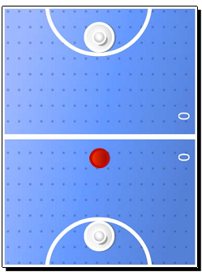
ccTouchesBegan方法：
void GameLayer::ccTouchesBegan(CCSet* pTouches, CCEvent* event) {
CCSetIterator i;
CCTouch* touch;
CCPoint tap;
GameSprite * player;
for( i = pTouches->begin(); i != pTouches->end(); i++) {
touch = (CCTouch*) (*i);
if(touch) {
tap = touch->getLocation();
for (int p = 0; p < 2; p++) {
player = (GameSprite *) _players->objectAtIndex(p);
if (player->boundingBox().containsPoint(tap)) {
player->setTouch(touch);
}
}
}
}
}
每个GameSprite都有一个_touch属性。如果触摸了某个精灵，就将touch存到其_touch属性中去。
ccTouchesMoved方法（外层略）：
for (int p = 0; p < _players->count(); p++) {
player = (GameSprite *) _players->objectAtIndex(p);
if (player->getTouch() != NULL && player->getTouch() == touch) {
CCPoint nextPosition = tap;
// 不能移出屏幕
if (nextPosition.x < player->radius())
nextPosition.x = player->radius();
if (nextPosition.x > _screenSize.width - player->radius())
nextPosition.x = _screenSize.width - player->radius();
if (nextPosition.y < player->radius())
nextPosition.y = player->radius();
if (nextPosition.y > _screenSize.height - player->radius())
nextPosition.y = _screenSize.height - player->radius();
// 不能移出自己的半场
if (player->getPositionY() < _screenSize.height * 0.5f)
{
if (nextPosition.y > _screenSize.height * 0.5 - player->radius())
{
nextPosition.y = _screenSize.height * 0.5 - player->radius();
}
} else {
if (nextPosition.y < _screenSize.height * 0.5 + player->radius())
{
nextPosition.y = _screenSize.height * 0.5 + player->radius();
}
}
player->setNextPosition(nextPosition);
player->setVector(ccp(tap.x - player->getPositionX(),
tap.y - player->getPositionY()));
}
}
精灵的vector会在碰撞检测时用到。
ccTouchesEnded方法（外层略）：
for (int p = 0; p < _players->count(); p++) {
player = (GameSprite *) _players->objectAtIndex(p);
if (player->getTouch() != NULL && player->getTouch() == touch) {
player->setTouch(NULL);
player->setVector(ccp(0,0));
}
}
实现多点触摸的另一种方式是实现CCTargetedTouchDelegate协议。But this may result in the implementation of up to eight methods. You may go to the test code in samples/TestCpp/Classes/TouchesTest and review the code used in the Paddle.h and Paddle.cpp files for an example of CCTargetedTouchDelegate in action.
update方法。
对速度施加一点摩擦力（0.98f）。如果没有发生碰撞，将在最后存储新位置：
void GameLayer::update (float dt) {
CCPoint ballNextPosition = _ball->getNextPosition();
CCPoint ballVector = _ball->getVector();
ballVector = ccpMult(ballVector, 0.98f);
ballNextPosition.x += ballVector.x;
ballNextPosition.y += ballVector.y;
接下来碰撞检测：
GameSprite * player;
CCPoint playerNextPosition;
CCPoint playerVector;
float squared_radii = pow(_player1->radius() + _ball->radius(), 2);
for (int p = 0; p < _players->count(); p++) {
player = (GameSprite *) _players->objectAtIndex(p);
playerNextPosition = player->getNextPosition();
playerVector = player->getVector();
float diffx = ballNextPosition.x - player->getPositionX();
float diffy = ballNextPosition.y - player->getPositionY();
float distance1 = pow(diffx, 2) + pow(diffy, 2);
float distance2 = pow(_ball->getPositionX() - playerNextPosition.x, 2)
+ pow(_ball->getPositionY() - playerNextPosition.y, 2);
既检查角色的当前位置，也检查下一个位置，防止球“穿过”角色。
当发生碰撞时，更加球的速度向量和球员的速度向量，计算球的下一个位置。并播放声效：
float mag_ball = pow(ballVector.x, 2) + pow(ballVector.y, 2);
float mag_player = pow(playerVector.x, 2) + pow(playerVector.y, 2);
float force = sqrt(mag_ball + mag_player);
float angle = atan2(diffy, diffx);
ballVector.x = force * cos(angle);
ballVector.y = (force * sin(angle));
ballNextPosition.x = playerNextPosition.x +
(player->radius() + _ball->radius() + force) * cos(angle);
ballNextPosition.y = playerNextPosition.y +
(player->radius() + _ball->radius() + force) * sin(angle);
SimpleAudioEngine::sharedEngine()->playEffect("hit.wav");
}
}
下面检查球和屏幕边缘的碰撞。如果发生碰撞，将球反弹并播放音效：
if (ballNextPosition.x < _ball->radius()) {
ballNextPosition.x = _ball->radius();
ballVector.x *= -0.8f;
SimpleAudioEngine::sharedEngine()->playEffect("hit.wav");
}
if (ballNextPosition.x > _screenSize.width - _ball->radius()) {
ballNextPosition.x = _screenSize.width - _ball->radius();
ballVector.x *= -0.8f;
SimpleAudioEngine::sharedEngine()->playEffect("hit.wav");
}
如果球到达球场上下边，检查球是否进入了球门：
if (ballNextPosition.y > _screenSize.height - _ball->radius()) {
if (_ball->getPosition().x < _screenSize.width * 0.5f - GOAL_WIDTH * 0.5f
|| _ball->getPosition().x > _screenSize.width * 0.5f + GOAL_WIDTH * 0.5f) {
ballNextPosition.y = _screenSize.height - _ball->radius();
ballVector.y *= -0.8f;
SimpleAudioEngine::sharedEngine()->playEffect("hit.wav");
}
}
if (ballNextPosition.y < _ball->radius() ) {
if (_ball->getPosition().x < _screenSize.width * 0.5f - GOAL_WIDTH * 0.5f
|| _ball->getPosition().x > _screenSize.width * 0.5f + GOAL_WIDTH * 0.5f) {
ballNextPosition.y = _ball->radius();
ballVector.y *= -0.8f;
SimpleAudioEngine::sharedEngine()->playEffect("hit.wav");
}
}
_ball->setVector(ballVector);
_ball->setNextPosition(ballNextPosition);
//check for goals!
if (ballNextPosition.y < -_ball->radius() * 2) {
this->playerScore(2);
}
if (ballNextPosition.y > _screenSize.height + _ball->radius() * 2) {
this->playerScore(1);
}
最后，更新所有对象的位置：
_player1->setPosition(_player1->getNextPosition());
_player2->setPosition(_player2->getNextPosition());
_ball->setPosition(_ball->getNextPosition());
如果向做精确的碰撞检测，逻辑必定是一样的：position now, position next, collision checks, and adjustments to position next, if any collision has occurred.
播放音效并停止球的运动：
void GameLayer::playerScore (int player) {
SimpleAudioEngine::sharedEngine()->playEffect("score.wav");
_ball->setVector(ccp(0,0));
Then we update the score for the scoring player, updating the score label in the process. And the ball moves to the court of the player against whom a point was just scored:
char score_buffer[10];
if (player == 1) {
_player1Score++;
sprintf(score_buffer, "%i", _player1Score);
_player1ScoreLabel->setString(score_buffer);
_ball->setNextPosition(ccp(_screenSize.width * 0.5,
_screenSize.height * 0.5 + 2 * _ball->radius()));
} else {
_player2Score++;
sprintf(score_buffer, "%i", _player2Score);
_player2ScoreLabel->setString(score_buffer);
_ball->setNextPosition(ccp(_screenSize.width * 0.5,
_screenSize.height * 0.5 - 2 * _ball->radius()));
}
The players are moved to their original position and their _touch properties are cleared:
_player1->setPosition(ccp(_screenSize.width * 0.5,
_player1->radius() * 2));
_player2->setPosition(ccp(_screenSize.width * 0.5,
_screenSize.height - _player1->radius() * 2));
_player1->setTouch(NULL);
_player2->setTouch(NULL);
}
也可以使用CCString：
CCString * score = CCString::createWithFormat("%i", _player1Score);
_player1ScoreLabel->setString(score->getCString());
介绍actions。如何只用action就能构建整个游戏：可以让角色移动、旋转、缩放等。如何利用多张图片和action让精灵动画。
本章内容：
游戏剧情：Meet our stressed out city of… your name of choice here. It’s a beautiful day, when suddenly the sky begins to fall. There are meteors rushing towards the city and it is your job to keep it safe.
The player in this game can tap the screen to start growing a bomb. When the bomb is big enough to be activated, the player taps the screen again to detonate it. Any nearby meteor will explode into a million pieces. The bigger the bomb, the bigger the detonation and the more meteors can be taken out by it. But the bigger the bomb, the longer it takes to grow it.
But it’s not just bad news coming down. There are also health packs dropping from the sky and if you allow them to reach the ground, you’ll recover some of your energy.
This is a universal game. It is designed for the iPad retina screen and it will be scaled down to fit other screens. 游戏屏幕横屏。不支持多点触摸。
解压从7341_04_START_PROJECT.zip开始。Only this time, the Device Family is set to Universal. And in RootViewController.mm, the supported interface orientation is set to Landscape. 这次我们只需要一个类GameLayer.cpp, and you will find that the interface for this class already contains all of the information it needs.
上一个工程只支持iPad屏。现在要支持更小的屏。打开AppDelegate.cpp，在applicationDidFinishLaunching中：
CCSize screenSize = pEGLView->getFrameSize();
CCSize designSize = CCSize(2048, 1536);
CCEGLView::sharedOpenGLView()->setDesignResolutionSize(designSize.width,
designSize.height, kResolutionExactFit);
if (screenSize.height > 768) {
CCFileUtils::sharedFileUtils()->setResourceDirectory("ipadhd");
} else if (screenSize.height > 320) {
CCFileUtils::sharedFileUtils()->setResourceDirectory("ipad");
} else {
CCFileUtils::sharedFileUtils()->setResourceDirectory("iphone");
}
pDirector->setContentScaleFactor(screenSize.height/designSize.height);
最后设置了缩放因数。
AppDelegate.cpp：
SimpleAudioEngine::sharedEngine()->preloadBackgroundMusic(file);
// lower playback volume for effects
SimpleAudioEngine::sharedEngine()->setEffectsVolume(0.4f);
背景音乐的音量通过setBackgroundMusicVolume设置。
回到GameLayer.cpp，查看init发现游戏初始化涉及三个方法：createGameScreen, createPools, createActions。
使用对象池，为了不必在主循环中再初始化精灵。
There is a CCArray called _fallingObjects also created here, and we start playing the background music, with the loop flag set to true:
SimpleAudioEngine::sharedEngine()->playBackgroundMusic("background.mp3", true);
精灵清单（sprite sheet）用于将多个图片组成成一张图片。当使用其中的一张图片给精灵贴图时，必须知道这张图片（矩形）在精灵清单的什么地方。精灵清单通常组织成两个文件：图片文件和数据文件。
I used TexturePacker to create these files for the game. You can find them inside the ipad, ipadhd, and iphone folders inside Resources. There is a sprite_sheet.png for the image and a sprite_sheet.plist that describes the individual frames inside the image.
下面是sprite_sheet.png：
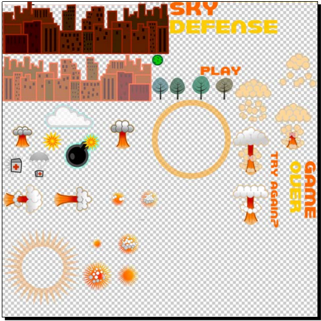
精灵清单与一个特殊的CCNode类连用：CCSpriteBatchNode。当同一个节点内的多个精灵使用同一个图片文件时可以使用此类。With CCSpriteBatchNode, you can substantially reduce the number of calls during the rendering stage of your game, which will help when targeting less powerful systems, though not noticeably in the Apple device family.
CCSpriteBatchNode像其他任何节点一样可以充当容器。利用z-order可以将CCSprites在batch node内分层排布。
CCSpriteBatchNode下面实现GameLayer.cpp的createGameScreen方法。Just below the lines that add the bg sprite, we instantiate our batch node:
void GameLayer::createGameScreen() {
//add bg
CCSprite * bg = CCSprite::create("bg.png");
...
CCSpriteFrameCache::sharedSpriteFrameCache()->
addSpriteFramesWithFile("sprite_sheet.plist");
_gameBatchNode = CCSpriteBatchNode::create("sprite_sheet.png");
this->addChild(_gameBatchNode);
要利用精灵清单创建batch node，需要先加载帧信息：将sprite_sheet.plist加载到CCSpriteFrameCache。然后用sprite_sheet.png创建batch node。（背景图片不在贴图内，于是单独加载。）
创建CCSprites使用的帧名，在定义在sprite_sheet.plist。
接下来向CCSpriteBatchNode添加精灵。首先是city:
｛｛下面从清单中创建精灵时貌似只用到了帧，没有用到batch node。
难道通过帧创建的精灵只能添加到batch node？其此batch node必须通过清单的图片创建？｝｝
CCSprite * sprite;
for (int i = 0; i < 2; i++) {
sprite = CCSprite::createWithSpriteFrameName("city_dark.png");
sprite->setPosition(ccp(_screenSize.width * (0.25f + i * 0.5f),
sprite->boundingBox().size.height * 0.5f));
_gameBatchNode->addChild(sprite, kForeground);
sprite = CCSprite::createWithSpriteFrameName("city_light.png");
sprite->setPosition(ccp(_screenSize.width * (0.25f + i * 0.5f),
sprite->boundingBox().size.height * 0.9f));
_gameBatchNode->addChild(sprite, kBackground);
}
然后是树：
//add trees
for (int i = 0; i < 3; i++) {
sprite = CCSprite::createWithSpriteFrameName("trees.png");
sprite->setPosition(ccp(
_screenSize.width * (0.2f + i * 0.3f),
sprite->boundingBox().size.height * 0.5f));
_gameBatchNode->addChild(sprite, kForeground);
}
The screen so far is made up of two instances of city_dark.png tiling at the bottom of the screen, and two instances of city_light.png that are also tiling. One needs to appear on top of the other, and for that we use the enumerated values declared in GameLayer.h:
enum {
kBackground,
kMiddleground,
kForeground
};
CCLabelBMFont用bitmap图像显式字母，而CCLabelTTF用的是true type font文件。
The bitmap image we are using here was created with the program GlyphDesigner, and in essence it works just as a sprite sheet does. 其实CCLabelBMFont是CCSpriteBatchNode的子类, so it behaves just like a batch node. You have images for all of the individual characters that you’ll need packed inside a PNG file (font.png), and then a data file (font.fnt) describing where each character is.
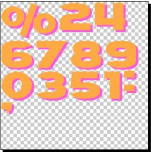
The difference between CCLabelBMFont and a regular CCSpriteBatchNode is that the data file also feeds the CCLabelBMFont object information on how to “write” with this font. In other words, how to space out the characters and lines correctly. 创建CCLabelBMFont是需要的参数依次是：初始字符串值、数据文件名，标签对象的宽度。
_scoreDisplay = CCLabelBMFont::create("0", "font.fnt", _screenSize.width * 0.3f);
可以通过setString改变标签内容：
_scoreDisplay->setString("My new Label");
CCLabelBMFont仍然在createGameScreen方法中：
_scoreDisplay = CCLabelBMFont::create("0", "font.fnt",
_screenSize.width * 0.3f);
_scoreDisplay->setAnchorPoint(ccp(1, 0.5));
_scoreDisplay->setPosition(ccp(_screenSize.width * 0.8f,
_screenSize.height * 0.94f));
this->addChild(_scoreDisplay);
// And then add a label to display the energy level:
_energyDisplay = CCLabelBMFont::create("100%", "font.fnt",
_screenSize.width * 0.1f, kCCTextAlignmentRight);
_energyDisplay->setPosition(ccp(_screenSize.width * 0.3f,
_screenSize.height * 0.94f));
this->addChild(_energyDisplay);
// _energyDisplaylabel后面的一个图标
CCSprite * icon = CCSprite::createWithSpriteFrameName("health_icon.png");
icon->setPosition(ccp(_screenSize.width * 0.15f,
_screenSize.height * 0.94f));
_gameBatchNode->addChild(icon, kBackground);
最后需要创建的精灵是云、炸弹和冲击波，及游戏的状态消息。
仍然在createGameScreen，添加云：
CCSprite * cloud;
_clouds = CCArray::createWithCapacity(4); // 用数组，为了将来移动云
_clouds->retain();
float cloud_y;
for (int i = 0; i < 4; i++) {
cloud_y = i % 2 == 0 ? _screenSize.height * 0.4f : _screenSize.height * 0.5f;
cloud = CCSprite::createWithSpriteFrameName("cloud.png");
cloud->setPosition(ccp (_screenSize.width * 0.1f + i * _screenSize.width * 0.3f, cloud_y));
_gameBatchNode->addChild(cloud, kBackground);
_clouds->addObject(cloud);
}
创建_bomb精灵。用户按住屏幕时会变大：
_bomb = CCSprite::createWithSpriteFrameName("bomb.png");
_bomb->getTexture()->generateMipmap();
_bomb->setVisible(false);
CCSize size = _bomb->boundingBox().size;
// add sparkle inside bomb sprite
CCSprite * sparkle = CCSprite::createWithSpriteFrameName("sparkle.png");
sparkle->setPosition(ccp(size.width * 0.72f, size.height * 0.72f));
// sparkle作为_bomb的孩子！而不是_gameBatchNode
_bomb->addChild(sparkle, kMiddleground, kSpriteSparkle);
//add halo inside bomb sprite
CCSprite * halo = CCSprite::createWithSpriteFrameName("halo.png");
halo->setPosition(ccp(size.width * 0.4f, size.height * 0.4f));
_bomb->addChild(halo, kMiddleground, kSpriteHalo);
_gameBatchNode->addChild(_bomb, kForeground);
_shockwave精灵，在_bomb消失后出现：
_shockWave = CCSprite::createWithSpriteFrameName("shockwave.png");
_shockWave->getTexture()->generateMipmap();
_shockWave->setVisible(false);
_gameBatchNode->addChild(_shockWave);
最后，添加两条消息，分别用于游戏开始和结束状态：
_introMessage = CCSprite::createWithSpriteFrameName("logo.png");
_introMessage->setPosition(ccp(_screenSize.width * 0.5f,
_screenSize.height * 0.6f));
_introMessage->setVisible(true);
this->addChild(_introMessage, kForeground);
_gameOverMessage = CCSprite::createWithSpriteFrameName("gameover.png");
_gameOverMessage->setPosition(ccp(_screenSize.width * 0.5f,
_screenSize.height * 0.65f));
_gameOverMessage->setVisible(false);
this->addChild(_gameOverMessage, kForeground);
_bomb->getTexture()->generateMipmap(); With this, we are telling the framework to create antialiased copies of this texture in diminishing sizes (mipmaps), since we are going to scale it down later. This is optional of course, as sprites can be resized without first generating mipmaps, but if you notice a loss of quality in the scaled sprites, you can fix it by creating mipmaps for their texture.
OpenGL的纹理大小必须是POT (power of two: 2, 4, 8, 16, and so on)。若不是Cocos2d-x将做两件事情：在内存中调整纹理大小，添加透明像素直到达到POT。或者，可能在某个
Assert处停止执行。With textures used for mipmaps the framework will stop execution for non-POT textures.
sparkle和halo是_bomb的孩子。当炸弹变大时，它的孩子也会跟着变大。
addChild的第三个参数是一个整数标签：
bomb->addChild(halo, kMiddleground, kSpriteHalo);
该标签来自GameLayer.h中的另一个枚举。利用此标签，可以从精灵中取到它的孩子：
CCSprite * halo = (CCSprite *) bomb->getChildByTag(kSpriteHalo);
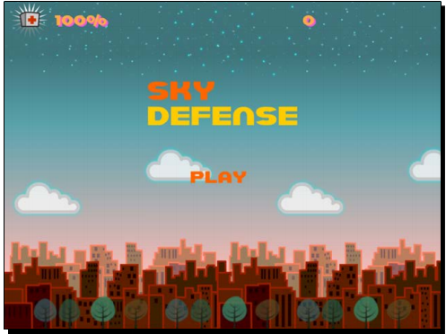
池只是一个对象数组。在createPools方法：
void GameLayer::createPools() {
CCSprite * sprite;
int i;
// 流星池
_meteorPool = CCArray::createWithCapacity(50);
_meteorPool->retain();
_meteorPoolIndex = 0;
for (i = 0; i < 50; i++) {
sprite = CCSprite::createWithSpriteFrameName("meteor.png");
sprite->setVisible(false);
// 在节点关系上仍属于_gameBatchNode
_gameBatchNode->addChild(sprite, kMiddleground, kSpriteMeteor);
_meteorPool->addObject(sprite);
}
// 医疗包
_healthPool = CCArray::createWithCapacity(20);
_healthPool->retain();
_healthPoolIndex = 0;
for (i = 0; i < 20; i++) {
sprite = CCSprite::createWithSpriteFrameName("health.png");
sprite->setVisible(false);
sprite->setAnchorPoint(ccp(0.5f, 0.8f));
_gameBatchNode->addChild(sprite, kMiddleground, kSpriteHealth);
_healthPool->addObject(sprite);
}
}
We’ll use the corresponding pool index to retrieve objects from the arrays as the game progresses.
CCNode存储着节点的位置、缩放、旋转、可见性、透明度信息。可以通过CCAction类改变这些值，即产生动画。Actions一般通过静态方法create创建。第一个参数一般是action的时长。例如：
CCFadeOut *fadeout = CCFadeOut::create(1.0f);
1.0f表示1秒。令节点运行此Action：
mySprite->runAction(fadeout);
还可以创建action序列（CCSequence）；or you can apply easing effects (CCEaseIn, CCEaseOut, and so on) to your actions. 可以重复action数次（CCRepeat）甚至永远（CCRepeatForever）；可以指定一个回调函数，在Action完成后执行。
在createActions方法中，实例化在游戏中反复使用的actions。
void GameLayer::createActions() {
// 医药包下落时的摆动效果
CCFiniteTimeAction* easeSwing = CCSequence::create(
CCEaseInOut::create(CCRotateTo::create(1.2f, -10), 2),
CCEaseInOut::create(CCRotateTo::create(1.2f, 10), 2),
NULL);
_swingHealth = CCRepeatForever::create((CCActionInterval*) easeSwing);
_swingHealth->retain();
// 爆炸波淡出，完后调用函数
_shockwaveSequence = CCSequence::create(
CCFadeOut::create(1.0f),
CCCallFunc::create(this, callfunc_selector(GameLayer::shockwaveDone)),
NULL);
_shockwaveSequence->retain();
// 让炸弹增大
_growBomb = CCScaleTo::create(6.0f, 1.0);
_growBomb->retain();
// action to rotate sprites
CCActionInterval* rotate = CCRotateBy::create(0.5f , -90);
_rotateSprite = CCRepeatForever::create( rotate );
_rotateSprite->retain();
动画仅是另一种形式的CCAction——改变的是CCSprite使用的纹理。动画action(CCAnimate)使用CCAnimation对象。CCAnimation包含动画所需的所有纹理。纹理（帧）是CCSpriteFrame对象，从CCSpriteFrameCache获取，后者包含sprite_sheet.plist中的信息。
仍在createActions方法。首先是流星到达城市时的爆炸。首先将帧加载到CCAnimation对象：
CCAnimation* animation;
CCSpriteFrame * frame;
//create CCAnimation object
animation = CCAnimation::create();
CCString * name;
for(int i = 1; i <= 10; i++) {
name = CCString::createWithFormat("boom%i.png", i);
frame = CCSpriteFrameCache::sharedSpriteFrameCache()
->spriteFrameByName(name->getCString());
animation->addSpriteFrame(frame);
}
利用CCAnimation创建CCAnimate：
animation->setDelayPerUnit(1 / 10.0f);
animation->setRestoreOriginalFrame(true);
_groundHit = CCSequence::create(
CCMoveBy::create(0, ccp(0, _screenSize.height * 0.12f)),
CCAnimate::create(animation),
CCCallFuncN::create(this, callfuncN_selector(GameLayer::animationDone)),
NULL);
_groundHit->retain();
The same steps are repeated to create the other explosion animation, which is used when the player hits a meteor or a health pack.
animation = CCAnimation::create();
for(int i = 1; i <= 7; i++) {
name = CCString::createWithFormat("explosion_small%i.png", i);
frame = CCSpriteFrameCache::sharedSpriteFrameCache()
->spriteFrameByName(name->getCString());
animation->addSpriteFrame(frame);
}
animation->setDelayPerUnit(0.5 / 7.0f);
animation->setRestoreOriginalFrame(true);
_explosion = CCSequence::create(
CCAnimate::create(animation),
CCCallFuncN::create(this, callfuncN_selector
(GameLayer::animationDone)),
NULL);
_explosion->retain();
如果setRestoreOriginalFrame设为true，则在动画完成后，精灵将回到初始状态。
下面是animationDone回调，它的作用是让精灵消失｛｛pSender为什么能指向期望的精灵｝｝：
void GameLayer::animationDone (CCNode* pSender) {
pSender->setVisible(false);
}
We will use a system of countdowns to add new meteors and new health packs, as well as a countdown that will incrementally make the game harder to play.
触摸后玩家开始游戏。如果游戏未运行，也防止炸弹并让它们爆炸。爆炸产生冲击波。
在update中，检查_shockwave和下落对象的碰撞。Cocos2d-x will take care of all of the rest through our created actions and callbacks!
实现ccTouchesBegan方法，处理两个状态：进入和游戏结束。
void GameLayer::ccTouchesBegan(CCSet* pTouches, CCEvent* event){
//if game not running, we are seeing either intro or gameover
if (!_running) {
//if intro, hide intro message
if (_introMessage->isVisible()) {
_introMessage->setVisible(false);
//if game over, hide game over message
} else if (_gameOverMessage->isVisible()) {
SimpleAudioEngine::sharedEngine()->stopAllEffects();
_gameOverMessage->setVisible(false);
}
this->resetGame();
return;
}
接下来处理触摸。这里只需要处理单点，因此调用->anyObject()：
CCTouch *touch = (CCTouch *)pTouches->anyObject();
if (touch) {
//if bomb already growing...
if (_bomb->isVisible()) {
//stop all actions on bomb, halo and sparkle
_bomb->stopAllActions();
CCSprite *child;
child = (CCSprite *) _bomb->getChildByTag(kSpriteHalo);
child->stopAllActions();
child = (CCSprite *) _bomb->getChildByTag(kSpriteSparkle);
child->stopAllActions();
// 如果炸弹足够大，则创建冲击波
if (_bomb->getScale() > 0.3f) {
_shockWave->setScale(0.1f);
_shockWave->setPosition(_bomb->getPosition());
_shockWave->setVisible(true);
_shockWave->runAction(CCScaleTo::create(0.5f,
_bomb->getScale() * 2.0f));
_shockWave->runAction((CCFiniteTimeAction*)_shockwaveSequence->copy()->autorelease());
SimpleAudioEngine::sharedEngine()->playEffect("bombRelease.wav");
} else {
// 炸弹不够大
SimpleAudioEngine::sharedEngine()->playEffect("bombFail.wav");
}
_bomb->setVisible(false);
// reset hits with shockwave, so we can count combo hits
_shockwaveHits = 0;
} else { //if no bomb currently on screen, create one
CCPoint tap = touch->getLocation();
_bomb->stopAllActions();
_bomb->setScale(0.1f);
_bomb->setPosition(tap);
_bomb->setVisible(true);
_bomb->setOpacity(50);
_bomb->runAction((CCAction *) _growBomb->copy()->autorelease());
CCSprite * child;
child = (CCSprite *) _bomb->getChildByTag(kSpriteHalo);
child->runAction((CCAction *) _rotateSprite->copy()->autorelease());
child = (CCSprite *) _bomb->getChildByTag(kSpriteSparkle);
child->runAction((CCAction *) _rotateSprite->copy()->autorelease());
}
}
void GameLayer::resetGame(void) {
_score = 0;
_energy = 100;
//reset timers and "speeds"
_meteorInterval = 2.5;
_meteorTimer = _meteorInterval * 0.99f;
_meteorSpeed = 10;//in seconds to reach ground
_healthInterval = 20;
_healthTimer = 0;
_healthSpeed = 15;//in seconds to reach ground
_difficultyInterval = 60;
_difficultyTimer = 0;
_running = true;
//reset labels
CCString * value = CCString::createWithFormat("%i%s", _energy, "%");
_energyDisplay->setString(value->getCString());
value = CCString::createWithFormat("%i", _score);
_scoreDisplay->setString(value->getCString());
}
void GameLayer::stopGame() {
_running = false;
//stop all actions currently running
int count = _fallingObjects->count();
CCSprite * sprite;
for (int i = count-1; i >= 0; i--) {
sprite = (CCSprite *) _fallingObjects->objectAtIndex(i);
sprite->stopAllActions();
sprite->setVisible(false);
_fallingObjects->removeObjectAtIndex(i);
}
if (_bomb->isVisible()) {
_bomb->stopAllActions();
_bomb->setVisible(false);
CCSprite * child;
child = (CCSprite *) _bomb->getChildByTag(kSpriteHalo);
child->stopAllActions();
child = (CCSprite *) _bomb->getChildByTag(kSpriteSparkle);
child->stopAllActions();
}
if (_shockWave->isVisible()) {
_shockWave->stopAllActions();
_shockWave->setVisible(false);
}
}
类中已经实现了让游戏越来越难的方法。参见increaseDifficulty。
GameLayer::update手工维护了一些定时器，例如：
void GameLayer::update (float dt) {
if (!_running) return;
int count;
int i;
CCSprite * sprite;
//update timers
_meteorTimer += dt;
if (_meteorTimer > _meteorInterval) {
_meteorTimer = 0;
this->resetMeteor();
}
其中_meteorTimer是一个计时器，时间到了后，向屏幕添加新的流星。还有其他定时器，参见工程代码。
其实可以用Action替换这些定时器：
CCSequence配合CCDelay再加上一个回调。But there are advantages to using these countdowns. It’s easier to reset them and to change them, and we can take them right into our main loop.
下面添加主循环：
碰撞检测：
int count;
CCSprite * sprite;
// check collision with shockwave
if (_shockWave->isVisible()) {
count = _fallingObjects->count();
for (int i = count-1; i >= 0; i--) {
sprite = (CCSprite *) _fallingObjects->objectAtIndex(i);
float diffx = _shockWave->getPositionX() - sprite->getPositionX();
float diffy = _shockWave->getPositionY() - sprite->getPositionY();
if (pow(diffx, 2) + pow(diffy, 2)
<= pow(_shockWave->boundingBox().size.width * 0.5f, 2)) {
sprite->stopAllActions();
sprite->runAction((CCAction *) _explosion->copy()->autorelease());
SimpleAudioEngine::sharedEngine()->playEffect("boom.wav");
if (sprite->getTag() == kSpriteMeteor) {
_shockwaveHits++;
_score += _shockwaveHits * 13 + _shockwaveHits * 2;
}
// play sound
_fallingObjects->removeObjectAtIndex(i);
}
}
CCString * value = CCString::createWithFormat("%i", _score);
_scoreDisplay->setString(value->getCString());
}
移动云。下面故意不用CCMoveTo实现，目的是展示Action可以省多少代码。
// move clouds
count = _clouds->count();
for (int i = 0; i < count; i++) {
sprite = (CCSprite *) _clouds->objectAtIndex(i);
sprite->setPositionX(sprite->getPositionX() + dt * 20);
if (sprite->getPositionX()
> _screenSize.width + sprite->boundingBox().size.width * 0.5f) {
sprite->setPositionX(-sprite->boundingBox().size.width * 0.5f);
}
}
We give the player an extra visual cue as to when a bomb is ready to explode, by changing its opacity.
if (_bomb->isVisible()) {
if (_bomb->getScale() > 0.3f) {
if (_bomb->getOpacity() != 255)
_bomb->setOpacity(255);
}
}
主循环中没有更新各个精灵，因为已经通过Action实现了。
To retrieve meteor sprites, we’ll use the resetMeteor method. resetMeteor方法会被update方法代替：
void GameLayer::resetMeteor(void) {
// 如果屏幕中对象太多
if (_fallingObjects->count() > 30) return;
CCSprite * meteor = (CCSprite *) _meteorPool->objectAtIndex(_meteorPoolIndex);
_meteorPoolIndex++;
if (_meteorPoolIndex == _meteorPool->count())
_meteorPoolIndex = 0;
// 为这个新流星选择开始和结束位置
int meteor_x = rand() % (int) (_screenSize.width * 0.8f) + _screenSize.width * 0.1f;
int meteor_target_x = rand() % (int) (_screenSize.width * 0.8f) + _screenSize.width * 0.1f;
meteor->stopAllActions();
meteor->setPosition(ccp(meteor_x,
_screenSize.height + meteor->boundingBox().size.height * 0.5));
// create action for meteor
CCActionInterval* rotate = CCRotateBy::create(0.5f , -90);
CCAction* repeatRotate = CCRepeatForever::create ( rotate );
CCFiniteTimeAction* sequence = CCSequence::create(
CCMoveTo::create(_meteorSpeed
ccp(meteor_target_x, _screenSize.height * 0.15f)),
CCCallFuncN::create(this, callfuncN_selector(GameLayer::fallingObjectDone)),
NULL);
meteor->setVisible ( true );
meteor->runAction(repeatRotate);
meteor->runAction(sequence);
_fallingObjects->addObject(meteor); // 加入到下落对象集合
}
记得释放资源：
GameLayer::~GameLayer () {
//release all retained actions
CC_SAFE_RELEASE(_growBomb);
CC_SAFE_RELEASE(_rotateSprite);
CC_SAFE_RELEASE(_shockwaveSequence);
CC_SAFE_RELEASE(_swingHealth);
CC_SAFE_RELEASE(_groundHit);
CC_SAFE_RELEASE(_explosion);
//release all retained arrays
CC_SAFE_RELEASE(_clouds);
CC_SAFE_RELEASE(_meteorPool);
CC_SAFE_RELEASE(_healthPool);
CC_SAFE_RELEASE(_fallingObjects);
}
Once again, you may refer to 7341_04_FINAL_PROJECT.zip if you find any problems running the code.
And as a bonus, I’ve added another version of the game with an extra type of enemy to deal with: a UFO hell bent on zapping the city! You can find this in 7341_04_BONUS_PROJECT.zip.
本章内容：
In this sci-fi version of the classic Snake game engine, you control a rocket ship that must move around seven planets collecting tiny supernovas. But here’s the catch: you can only steer the rocket by rotating it around pivot points put in place through touch events. So the vector of movement we set for the rocket ship is at times linear and at times circular.
This is a universal game designed for the regular iPad and then scaled up and down to match the screen resolution of other devices. It is set to play in portrait mode and it does not support multi-touches.
Download the 7341_05_START_PROJECT.zip and 7341_05_FINAL_PROJECT.zip files from this book’s support page. You will once again use the Start Project option to work on; this way you won’t need to type logic or syntax already covered in previous chapters. The Start Project option contains all of the resource files, and all the classes declarations, as well as place-holders for all of the methods inside the classes’ implementation files. We’ll go over these in a moment.
You should Run the Final Project version to acquaint yourself with the game: By pressing and dragging your finger on the rocket ship you draw a line. Release the touch and you create a pivot point. The ship will rotate around this pivot point until you press again on the ship to release it. Your aim is to collect the bright supernovas and avoid the planets.
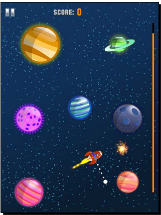
If you run the Start Project option you should see that the basic game screen is already in place. There is no need to repeat the steps we’ve taken in our previous tutorial for creating a batch node and positioning all the screen sprites. We once again have a _gameBatchNode object and a createGameScreen method.
By all means read through the code inside the createGameScreen method. Of key importance here is that each planet we create is stored inside _planets CCArray. We also create our _rocket object (class Rocket) and our _lineContainer object (LineContainer class) here. More on these soon.
Assuming that you have the Start Project option opened in Xcode, let’s review the screen settings for this game in AppDelegate.cpp, where inside the applicationDidFinishLaunching method you should see this:
CCSize designSize = CCSize(768, 1024);
CCEGLView::sharedOpenGLView()->setDesignResolutionSize(designSize.width,
designSize.height, kResolutionExactFit);
float screenRatio = screenSize.height / screenSize.width;
if (screenSize.width > 768) {
CCFileUtils::sharedFileUtils()->setResourceDirectory("ipadhd");
pDirector->setContentScaleFactor(screenSize.height/designSize.height);
} else if (screenSize.width > 320) {
if (screenRatio >= 1.5f) {
CCFileUtils::sharedFileUtils()->setResourceDirectory("iphonehd");
} else {
CCFileUtils::sharedFileUtils()->setResourceDirectory("ipad");
}
pDirector->setContentScaleFactor(screenSize.height/designSize.height);
} else {
CCFileUtils::sharedFileUtils()->setResourceDirectory("iphone");
pDirector->setContentScaleFactor(screenSize.height/designSize.height);
}
The iPad is the oddball in terms of screen size: it has a 1.33 screen ratio (longer side divided by shorter side). 多数Android设备在1.6和1.77之间，with a few sharing the iPhone screen ratio of 1.5.
Why should you care? In this game most sprites are circles and the difference in screen ratio would cause them to look squished when ported to different screens using the kResolutionExactFit parameter, which distorts your game screen to fit the screen of the device. 有多种解决方式。例如，可以以iPhone的比率为设计目标（因为它接近各种比率的平均值），然后使用kResolutionShowAll。这将产生黑边，但不会使精灵变形（第8章将使用该方法）。But here I used another method, I created sprite sheets that account for the squished look of the sprites in different screen ratios, counteracting the distortion. You, or your designer, could produce art for different screen ratios, such as 1.3, 1.5, 1.6, and 1.7, and pack different sets of images for different device families. For the Apple family, the solution shown here works very well and we can use the entire screen through kResolutionExactFit.
The following image shows two sets of images found in the sprite sheets. Notice the distortion in the iPhone ones. In the actual game this distortion will disappear as it will counteract the change from a 1.3 screen ratio to a 1.5:
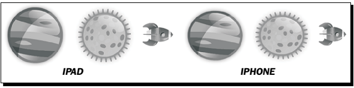
粒子通过 ParticleDesigner 创建。
需要一个XML文件描述例子系统的属性。ParticleDesigner 将粒子系统数据导出到plist文件。这个文件用于创建CCParticleSystemQuad对象。From Cocos2d-x you can modify any of these settings through setters inside CCParticleSystem.
GameLayer.cpp的createParticle方法：
// CCParticleSystem * _jet;
_jet = CCParticleSystemQuad::create("jet.plist");
_jet->setSourcePosition(ccp(-_rocket->getRadius() * 0.8f,0));
_jet->setAngle(180);
_jet->stopSystem();
this->addChild(_jet, kBackground);
_boom = CCParticleSystemQuad::create("boom.plist");
_boom->stopSystem();
this->addChild(_boom, kForeground);
_comet = CCParticleSystemQuad::create("comet.plist");
_comet->stopSystem();
_comet->setPosition(ccp(0, _screenSize.height * 0.6f));
_comet->setVisible(false);
this->addChild(_comet, kForeground);
_pickup = CCParticleSystemQuad::create("plink.plist");
_pickup->stopSystem();
this->addChild(_pickup, kMiddleground);
_warp = CCParticleSystemQuad::create("warp.plist");
_warp->setPosition(_rocket->getPosition());
this->addChild(_warp, kBackground);
_star = CCParticleSystemQuad::create("star.plist");
_star->stopSystem();
_star->setVisible(false);
this->addChild(_star, kBackground, kSpriteStar);
所有的例子系统都被添加到GameLayer的孩子；不能添加到CCSpriteBatchNode。创建后要调用stopSystem()，否则被添加到一个节点时会立即执行。
Cocos2d-x携带了一些常用例子系统，可以在此基础上修改。If you go to the test folder at:
samples/TestCpp/Classes/ParticleTestyou will see examples of these systems being used. The actual particles data files are found at:samples/TestCpp/Resources/Particles.
This grid is created inside the createStarGrid method in GameLayer.cpp. What the method does is determine all of the possible spots on the screen where we can place the _star particle system.
用_grid存储所有可用的地点，as it will be easier to shuffle the list this way than to use CCArray:
std::vector<CCPoint> _grid;
该方法将屏幕分成多个网格。每个 32 x 32 像素，ignoring the areas too close to the screen borders (gridFrame). Then we check the distance between each cell and the planet sprites stored inside CCArray _planets. If the cell is far enough from the planets we store it inside the _grid vector as CCPoint.
In the following image you can get an idea of the result we’re after. We do not want any of the white cells overlapping any of the planets.
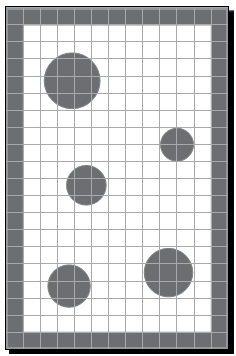
We output a message to the console with CCLog stating how many cells we end up with:
CCLog("POSSIBLE STARS: %i", _grid.size());
This vector list will be shuffled at each new game, so we end up with a random sequence of possible positions for our star:
std::random_shuffle(_grid.begin(), _grid.end());
This way we never place a star on top of a planet or too close to it that the rocket could not reach it without colliding with the planet.
LineContainer.cpp是CCNode的一个子类，允许我们在屏幕上绘制线和圆。每个CCNode都有一个draw方法。This is where the OpenGL drawing of our sprites take place, and it gets called automatically by the framework during rendering (so up to 60 times a second). So in order to draw something yourself, you just need to override this method; and then in order to draw primitives, you use the helper methods from a Cocos2d-x class called CCDrawingPrimitives.cpp.
The methods we’ll use are: ccDrawLine and ccDrawCircle.
在LineContainer.cpp中实现绘制。Basically LineContainer will be used to display the lines that the player draws on screen in order to manipulate _rocket sprite, as well as display an energy bar that acts as a sort of timer in our game:
改变CCNode的draw方法：
switch (_lineType) {
case LINE_NONE:
break;
case LINE_TEMP:
ccDrawColor4F(1.0, 1.0, 1.0, 1.0);
ccDrawLine(_tip, _pivot);
ccDrawCircle(_pivot, 10, CC_DEGREES_TO_RADIANS(360), 10, false);
break;
case LINE_DASHED:
ccDrawColor4F(1.0, 1.0, 1.0, 1.0);
ccDrawCircle(_pivot, 10, M_PI, 10, false);
int segments = _lineLength / (_dash + _dashSpace);
float t = 0.0f;
float x_;
float y_;
for (int i = 0; i < segments + 1; i++) {
x_ = _pivot.x + t * (_tip.x - _pivot.x);
y_ = _pivot.y + t * (_tip.y - _pivot.y);
ccDrawCircle(ccp ( x_, y_ ), 4, M_PI, 6, false);
t += (float) 1 / segments;
}
break;
}
// 下面是绘制能量条
ccDrawColor4F(0.0, 0.0, 0.0, 1.0);
ccDrawLine(ccp(_energyLineX, _screenSize.height * 0.1f),
ccp(_energyLineX, _screenSize.height * 0.9f));
ccDrawColor4F(1.0, 0.5, 0.0, 1.0);
ccDrawLine(ccp(_energyLineX, _screenSize.height * 0.1f),
ccp(_energyLineX, _screenSize.height * 0.1f + _energy * _energyHeight ));
If _lineType is LINE_TEMP this means that the player is currently dragging a finger away
from the _rocket object and we want to show a white line from the _rocket current
position to the player’s current touch position. These points are called, respectively, tip
and pivot. We also draw a circle directly on the pivot point.
If _lineType is LINE_DASHED then this means that the player has removed his or her
finger from the screen and set a new pivot point for the _rocket to rotate around. We draw
a white dotted line, using what is known as the bezier linear formula to draw a series of tiny
circles from the _rocket’s current position and the pivot point.
在LineContainer.cpp构造器中，注意到设置了每个ccDraw使用的线宽：
glLineWidth(8.0 * CC_CONTENT_SCALE_FACTOR());
但注意框架不会负责缩放这个值。当遇到不会缩放的值时，你需要手写逻辑，乘以CC_CONTENT_SCALE_FACTOR()（在AppDelegate.cpp中设置的缩放）。
在Rocket.cpp中，根据一个标志设置火箭的纹理：
if (flag) {
this->setDisplayFrame(CCSpriteFrameCache::sharedSpriteFrameCache()
->spriteFrameByName("rocket_on.png"));
} else {
this->setDisplayFrame(CCSpriteFrameCache::sharedSpriteFrameCache()
->spriteFrameByName("rocket.png"));
}
游戏主循环每次循环都会调用火箭的update方法：
CCPoint position = this->getPosition();
if (_rotationOrientation == ROTATE_NONE) {
position.x += _vector.x * dt;
position.y += _vector.y * dt;
} else {
// 根据当前位置、轴点和旋转焦点确定下一个位置
CCPoint rotatedPoint = ccpRotateByAngle(position, _pivot, _angularSpeed * dt);
position.x = rotatedPoint.x;
position.y = rotatedPoint.y;
float rotatedAngle;
CCPoint clockwise = ccpRPerp( ccpSub(position, _pivot) );
if (_rotationOrientation == ROTATE_COUNTER) {
rotatedAngle = atan2 (-1 * clockwise.y, -1 * clockwise.x);
} else {
rotatedAngle = atan2 (clockwise.y, clockwise.x);
}
//update rocket vector
_vector.x = _speed * cos (rotatedAngle);
_vector.y = _speed * sin (rotatedAngle);
this->setRotationFromVector();
if (this->getRotation() > 0) {
this->setRotation( fmodf(this->getRotation(), 360.0f));
} else {
this->setRotation( fmodf(this->getRotation(), -360.0f));
}
}
使用
CCNode的受保护字段还是使用其setter方法。调用setter一般会将dirty置位，将导致精灵被重绘。直接改变属性不会置位dirty，因此有可能看不到改变。
我们不能用CCAction实现旋转，因为旋转更新的太快了｛｛参数配置更新快，不是说旋转的快｝｝，而CCAction需要时间初始化和运行。
在GameLayer.cpp的ccTouchesBegan方法中：
if (!_running) return;
CCTouch *touch = (CCTouch *)pTouches->anyObject();
if (touch) {
CCPoint tap = touch->getLocation();
// track if tapping on ship
float dx = _rocket->getPositionX() - tap.x;
float dy = _rocket->getPositionY() - tap.y;
if (dx * dx + dy * dy <= pow(_rocket->getRadius() * 1.2, 2)) {
// clear lines
_lineContainer->setLineType ( LINE_NONE );
_rocket->setRotationOrientation ( ROTATE_NONE );
_drawing = true;
}
}
判断是否点了暂停：
if (!_running) return;
CCTouch *touch = (CCTouch *)pTouches->anyObject();
if(touch) {
CCPoint tap = touch->getLocation();
if (_pauseBtn->boundingBox().containsPoint(tap)) {
_paused->setVisible(true);
_state = kGamePaused;
_pauseBtn->setDisplayFrame(
CCSpriteFrameCache::sharedSpriteFrameCache()
->spriteFrameByName("btn_pause_on.png"));
_running = false;
return;
}
}
What follows next is even more math, using the amazingly helpful methods from Cocos2d-x that are related to vector math (ccpRPerp, ccpDot, ccpSub, to name a few) some of which we’ve seen already in the Rocket class:
CCPoint clockwise = ccpRPerp(ccpSub(_rocket->getPosition(), _rocket->getPivot()));
float dot = ccpDot ( clockwise, _rocket->getVector() );
if (dot > 0) {
_rocket->setAngularSpeed (_rocket->getAngularSpeed() * -1 );
_rocket->setRotationOrientation ( ROTATE_CLOCKWISE);
_rocket->setTargetRotation (CC_RADIANS_TO_DEGREES(atan2(clockwise.y, clockwise.x) ) );
} else {
_rocket->setRotationOrientation ( ROTATE_COUNTER );
_rocket->setTargetRotation (CC_RADIANS_TO_DEGREES(atan2(-1 * clockwise.y, -1 * clockwise.x) ) );
}
_lineContainer->setLineType ( LINE_DASHED );
}
}
主循环负责碰撞检测，更新_lineContainer中的点，adjusting our _jet particle system to our _rocket sprite, and a few other things.
实现主update方法：
if (!_running) return;
if (_lineContainer->getLineType() != LINE_NONE) {
_lineContainer->setTip (_rocket->getPosition() );
}
// track collision with sides
if (_rocket->collidedWithSides()) {
_lineContainer->setLineType ( LINE_NONE );
}
_rocket->update(dt);
// update jet particle so it follows rocket
if (!_jet->isActive()) _jet->resetSystem();
_jet->setRotation(_rocket->getRotation());
_jet->setPosition(_rocket->getPosition());
In this game you control a cyclist in Victorian London trying to avoid the traffic on his way
home. For reasons no one can explain, he’s riding his bike on top of the buildings. As the
player, it is your job to ensure he makes it.
The controls are very simple: you tap the screen to make the cyclist jump. While he’s in the
air, if you tap the screen again the cyclist will open his trusty umbrella, either slowing his
descent or adding a boost to his jump.
This game is of a type commonly known as a dash game, a genre that has become increasingly popular online and on various app stores.
这个游戏中，地形是敌人。
The game is an universal application, designed for the iPad’s retina display but with support for other display sizes. It is played in landscape mode and it does not support multi-touch.
用矩形作为精灵的快速原型，验证游戏创意。
从7341_06_START_PROJECT.zip开始。
向GameLayer.cpp，createGameScreen最后添加三行：
CCSprite * quickSprite = CCSprite::create("blank.png");
quickSprite->setTextureRect(CCRectMake(0, 0, 100, 100));
quickSprite->setColor(ccc3(255,255,255));
quickSprite->setPosition(ccp(_screenSize.width * 0.5,
_screenSize.height * 0.5));
this->addChild(quickSprite);
blank.png是一个1像素的白色块。
删掉上述代码，改成：
_gameBatchNode = CCSpriteBatchNode::create("blank.png", 200);
this->addChild(_gameBatchNode, kMiddleground);
于是整个游戏只需要一个图片。
继续：
_terrain = Terrain::create();
_gameBatchNode->addChild(_terrain, kMiddleground);
_player = Player::create();
_gameBatchNode->addChild(_player, kBackground);
表示自行车。It will jump, float, and collide with the _terrain object. It’s x speed is passed to the _terrain object causing it to move, side scrolling to the left of the screen.
Player派生自GameSprite。This one has getters and setters for next position, vector of movement, and the sprite’s width and height.
The Player interface has inline helper methods to retrieve information about its rectangle boundaries related to its current position (left, right, top, bottom) and its next position (next_left, next_right, next_top, next_bottom). These will be used in collision detection with the _terrain object.
_terrain对象由多个Block对象构成。可能是一个建筑物，或之间的缝隙。有四纵不同的建筑。Block对象可以有不同的宽度和高度。
Block也派生自GameSprite， and it also has inline helper methods to retrieve information about its boundaries, but only in relation to its current position, since Block don’t technically move.
This object contains the individual Block objects that form the landscape. It contains just enough Block objects to fill the screen, and as the _terrain object scrolls to the left, the Block objects that leave the screen are moved to the far right side of the _terrain and reused as new Blocks, ensuring continuous scrolling.
The _terrain object also is responsible for collision checks with the _player object, since it has quick access to all information we’ll need for collision detection; namely the list of blocks currently on the screen, their size, type, and position. Our main loop then will call on the Terrain object to test for player collision.
打开Player.cpp。_player is created through a static method that uses our blank.png file to texture the sprite. That method also makes a call to initPlayer, and this is what you should type for that method:
void Player::initPlayer () {
this->setAnchorPoint(ccp(0.5f, 1.0f));
this->setPosition(ccp(_screenSize.width * 0.2f,
_nextPosition.y));
_height = 228;
_width = 180;
this->setTextureRect(CCRectMake(0, 0, _width, _height));
this->setColor(ccc3(255,255,255));
}
为了动画方便，_player对象的锚点放在顶部中间。
void Player::setFloating (bool value) {
if (_floating == value) return;
if (value && _hasFloated) return;
_floating = value;
if (value) {
_hasFloated = true;
_vector.y += PLAYER_JUMP * 0.5f;
}
}
The _hasFloated property will ensure the player can only open the umbrella once while in the air. And when we set _floating to true we give the _player y vector a boost.
void Player::update (float dt) {
if (_speed + ACCELERATION <= _maxSpeed) {
_speed += ACCELERATION;
} else {
_speed = _maxSpeed;
}
_vector.x = _speed;
随着时间增加增加_maxSpeed，以增加游戏难度。
Next, we update the _player object based on its _state of movement:
switch (_state) {
case kPlayerMoving:
_vector.y -= GRAVITY;
if (_hasFloated) _hasFloated = false;
break;
case kPlayerFalling:
if (_floating) {
_vector.y -= FLOATNG_GRAVITY;
_vector.x *= FLOATING_FRICTION;
} else {
_vector.y -= GRAVITY;
_vector.x *= AIR_FRICTION;
_floatingTimer = 0;
}
break;
case kPlayerDying:
_vector.y -= GRAVITY;
_vector.x = -_speed;
this->setPositionX(this->getPositionX() + _vector.x);
break;
}
We have different values for gravity and friction depending on move state. We also have a time limit for how long the _player object can be floating, and we reset that timer when the _player object is not floating. If the _player object is dying (collided with a wall), we move the _player object backwards and downwards until it leaves the screen.
if (_jumping) {
_state = kPlayerFalling;
_vector.y += PLAYER_JUMP * 0.25f;
if (_vector.y > PLAYER_JUMP ) _jumping = false;
}
if (_vector.y < -TERMINAL_VELOCITY)
_vector.y = -TERMINAL_VELOCITY;
_nextPosition.y = this->getPositionY() + _vector.y;
if (_floating) {
_floatingTimer += dt;
if (_floatingTimer > _floatingTimerMax) {
_floatingTimer = 0;
this->setFloating(false);
}
}
}
When the player presses the screen for a jump we shouldn’t make the sprite jump immediately. Changes in state should always happen smoothly. So we have a boolean property in _player called _jumping. It is set to true when the player presses the screen and we slowly add the jump force to _vector.y. So the longer the player presses the screen, the higher the jump will be and a quick tap will result in a shorter jump. This is a nice feature to add to any platform game.
We next limit the y speed with a terminal velocity, update the next position of the _player object, and update the floating timer if _player is floating.
Terrain类 void Terrain::initTerrain () {
_increaseGapInterval = 5000;
_increaseGapTimer = 0;
_gapSize = 2;
_blockPool = CCArray::createWithCapacity(20);
_blockPool->retain();
// 初始化对象池
Block * block;
for (int i = 0; i < 20; i++) {
block = Block::create();
this->addChild(block);
_blockPool->addObject(block);
}
_blocks = CCArray::createWithCapacity(20);
_blocks->retain();
_minTerrainWidth = _screenSize.width * 1.5f;
random_shuffle(_blockPattern.begin(), _blockPattern.end());
random_shuffle(_blockWidths.begin(), _blockWidths.end());
random_shuffle(_blockHeights.begin(), _blockHeights.end());
this->addBlocks(0);
}
We have a timer to increase the width of gaps (we begin with gaps two tiles long).
创建一个block的对象池。于是在游戏过程中再实例化。20足够多了。_terrain对象的最小宽度是屏幕宽度的1.5倍。
void Terrain::addBlocks(int currentWidth) {
Block * block;
while (currentWidth < _minTerrainWidth) {
block = (Block *) _blockPool->objectAtIndex(_blockPoolIndex);
_blockPoolIndex++;
if (_blockPoolIndex == _blockPool->count()) {
_blockPoolIndex = 0;
}
this->initBlock(block);
currentWidth += block->getWidth();
_blocks->addObject(block);
}
this->distributeBlocks();
}
反复增加block直到_terrain对象的宽度超过最小宽度。
放置块：
void Terrain::distributeBlocks() {
int count = _blocks->count();
Block * block;
Block * prev_block;
for (int i = 0; i < count; i++) {
block = (Block *) _blocks->objectAtIndex(i);
if (i != 0) {
prev_block = (Block *) _blocks->objectAtIndex(i - 1);
block->setPositionX( prev_block->getPositionX()
+ prev_block->getWidth());
} else {
block->setPositionX ( 0 );
}
}
}
Finally the method that initializes the blocks based on our patterns array.
Inside the Terrain class, we start the initBlock method like this:
void Terrain::initBlock(Block * block) {
int blockWidth;
int blockHeight;
int type = _blockTypes[_currentTypeIndex];
_currentTypeIndex++;
if (_currentTypeIndex == _blockTypes.size()) {
_currentTypeIndex = 0;
}
开始构建块：
if (_startTerrain) {
//...
} else {
_lastBlockHeight = 2; // 2个瓷砖高
_lastBlockWidth = rand() % 2 + 2;
block->setupBlock (_lastBlockWidth, _lastBlockHeight, type);
}
`
The player must tap the screen to begin the game (_startTerrain), until then we show buildings with the same height (two tiles) and random width.
If we are set to _startTerrain:
if (_startTerrain) {
if (_showGap) {
int gap = rand() % _gapSize;
if (gap < 2) gap = 2;
block->setupBlock (gap, 0, kBlockGap);
_showGap = false;
} else {
//...
The information inside _blockPattern determines how many buildings we show in a row, and once a series is completed we show a gap by setting the boolean value of _showGap to true. A gap’s width is based on the current value of _gapSize, which may increase as the game gets harder and it can’t be less than two times the tile width.
If we are not creating a gap this time:
} else {
blockWidth = _blockWidths[_currentWidthIndex];
_currentWidthIndex++;
if (_currentWidthIndex == _blockWidths.size()) {
random_shuffle(_blockWidths.begin(), _blockWidths.end());
_currentWidthIndex = 0;
}
if (_blockHeights[_currentHeightIndex] != 0) {
// change height of next block
blockHeight = _blockHeights[_currentHeightIndex];
// if difference too high, decrease it
if (blockHeight - _lastBlockHeight > 2
&& _gapSize == 2) {
blockHeight = 1;
}
} else {
blockHeight = _lastBlockHeight;
}
_currentHeightIndex++;
if (_currentHeightIndex == _blockHeights.size()) {
_currentHeightIndex = 0;
random_shuffle(_blockHeights.begin(), _blockHeights.end());
}
block->setupBlock (blockWidth, blockHeight, type);
_lastBlockWidth = blockWidth;
_lastBlockHeight = blockHeight;
We determine the width and height of the new block based on the current indexed values of _blockWidths and _blockHeights. Notice how we reshuffle the arrays once we are done iterating through them (random_shuffle).
We finish by updating the count in the current series of buildings, to determine if we should show a gap next, or not:
//select next block series pattern
_currentPatternCnt++;
if (_currentPatternCnt > _blockPattern[_currentPatternIndex]) {
_showGap = true;
//start new pattern
_currentPatternIndex++;
if (_currentPatternIndex == _blockPattern.size()) {
random_shuffle(_blockPattern.begin(),
_blockPattern.end());
_currentPatternIndex = 0;
}
_currentPatternCnt = 1;
}
}
We move the terrain inside the move method:
xMove表示在x轴移动的距离。其值取决于_player的速度。
void Terrain::move (float xMove) {
if (xMove < 0) return;
if (_startTerrain) {
if (xMove > 0 && _gapSize < 5)
_increaseGapTimer += xMove;
if (_increaseGapTimer > _increaseGapInterval) {
_increaseGapTimer = 0;
_gapSize += 1;
}
}
this->setPositionX(this->getPositionX() - xMove);
Block * block;
block = (Block *) _blocks->objectAtIndex(0);
if (m_tPosition.x + block->getWidth() < 0) {
_blocks->removeObjectAtIndex(0);
_blocks->addObject(block);
m_tPosition.x += block->getWidth();
float width_cnt = this->getWidth() - block->getWidth()
- ((Block *) _blocks->objectAtIndex(0))-> getWidth();
this->initBlock(block);
this->addBlocks(width_cnt);
}
}
定时器用于增大间隙。然后我们将terrain向左移动。如果移动后，一个块移出了屏幕，则将它移到_blocks最后，将其初始化一个新的块（initBlock）。
最后调用addBlocks确保terrain超过最小要求的长度。
void Terrain::reset() {
this->setPosition(ccp(0,0));
_startTerrain = false;
int count = _blocks->count();
Block * block;
int currentWidth = 0;
for (int i = 0; i < count; i++) {
block = (Block *) _blocks->objectAtIndex(i);
this->initBlock(block);
currentWidth += block->getWidth();
}
while (currentWidth < _minTerrainWidth) {
block = (Block *) _blockPool->objectAtIndex(_blockPoolIndex);
_blockPoolIndex++;
if (_blockPoolIndex == _blockPool->count()) {
_blockPoolIndex = 0;
}
_blocks->addObject(block);
this->initBlock(block);
currentWidth += block->getWidth();
}
this->distributeBlocks();
_increaseGapTimer = 0;
_gapSize = 2;
}
In this game we’ll need to check collision between the _player’s bottom side and the Block’s top side, and between the _player’s right side and the Block’s left side. We’ll do that by checking the _player’s current and next position.
Still in Terrain.cpp:
void Terrain::checkCollision (Player * player) {
if (player->getState() == kPlayerDying) return;
int count = _blocks->count();
Block * block;
bool inAir = true;
for (int i = 0; i < count; i++) {
block = (Block *) _blocks->objectAtIndex(i);
if (block->getType() == kBlockGap) continue;
// if within x range, check y (bottom collision)
if (player->right() >= this->getPositionX() + block->left()
&& player->left() <= this->getPositionX() + block->right()) {
if (player->bottom() >= block->top()
&& player->next_bottom() <= block->top()
&& player->top() > block->top()) {
player->setNextPosition(ccp(player->getNextPosition().x,
block->top() + player->getHeight()));
player->setVector ( ccp(player->getVector().x, 0));
inAir = false;
break;
}
}
}
First we state that the _playerobject is currently falling with inAir = true. We don’t check for collisions if _playeris dying and we skip collision checks with any gap blocks. 设为inAir = false表示玩家已着陆。
下面检查x轴方向的碰撞：
for (int i = 0; i < count; i++) {
block = (Block *) _blocks->objectAtIndex(i);
if (block->getType() == kBlockGap) continue;
// now if within y range, check x (side collision)
if ((player->bottom() < block->top()
&& player->top() > block->bottom())
|| (player->next_bottom() < block->top()
&& player->next_top() > block->bottom())) {
if (player->right() >= this->getPositionX() + block->getPositionX()
&& player->left() < this->getPositionX() + block->getPositionX()) {
player->setPositionX( this->getPositionX() + block->getPositionX() - player->getWidth() * 0.5f );
player->setNextPosition(ccp(this->getPositionX() + block->getPositionX() - player->getWidth() * 0.5f, player->getNextPosition().y));
player->setVector(ccp(player->getVector().x * -0.5f, player->getVector().y) );
if (player->bottom() + player->getHeight() * 0.2f < block->top()) {
player->setState(sprite);
return;
}
break;
}
}
}
We end by updating the _player‘s state based on our collision results:
if (inAir) {
player->setState(kPlayerFalling);
} else {
player->setState(kPlayerMoving);
player->setFloating (false);
}
}
Remember, we want smooth transitions between states, so pay attention to how jumping
is implemented: not by immediately applying a force to the player’s vector, but by simply
changing a booleanproperty and letting the _player’s updatemethod handle the
change smoothly.
void GameLayer::ccTouchesBegan(CCSet* pTouches, CCEvent* event) {
if (!_running) {
if (_player->getState() == kPlayerDying) {
_terrain->reset();
_player->reset();
resetGame();
}
return;
}
if (!_terrain->getStartTerrain()) {
_terrain->setStartTerrain ( true );
return;
}
Remember that at first the buildings are all the same height and there are no gaps. Once the player presses the screen, we begin changing that through setStartTerrain.
CCTouch *touch = (CCTouch *)pTouches->anyObject();
if (touch) {
if (_player->getState() == kPlayerFalling) {
_player->setFloating ( _player->getFloating()?false : true );
} else {
if (_player->getState() != kPlayerDying)
_player->setJumping(true);
}
}
}
If a touch ends, we just need to stop any jumps:
void GameLayer::ccTouchesEnded(CCSet* pTouches, CCEvent* event) {
_player->setJumping(false);
}
void GameLayer::update(float dt) {
if (!_running) return;
if (_player->getPositionY() < -_player->getHeight()
|| _player->getPositionX() < -_player->getWidth() * 0.5f)
{
_running = false;
}
Now update all the elements positions and check for collision:
_player->update(dt);
_terrain->move(_player->getVector().x);
if (_player->getState() != kPlayerDying)
_terrain->checkCollision(_player);
_player->place();
Move _gameBatchNode in relation to the _player object:
if (_player->getNextPosition().y > _screenSize.height * 0.6f) {
_gameBatchNode->setPositionY( (_screenSize.height * 0.6f - _player->getNextPosition().y) * 0.8f);
} else {
_gameBatchNode->setPositionY ( 0 );
}
And make the game more difficult as time goes on by increasing the _player’s maximum speed:
if (_terrain->getStartTerrain() && _player->getVector().x > 0) {
_speedIncreaseTimer += dt;
if (_speedIncreaseTimer > _speedIncreaseInterval) {
_speedIncreaseTimer = 0;
_player->setMaxSpeed (_player->getMaxSpeed() + 4);
}
}
}
本章内容：
CCSpriteBatchNode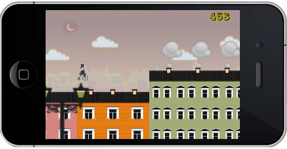
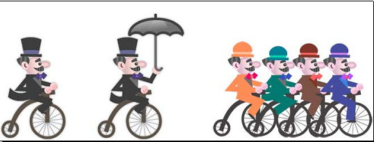
_player运行动画_rideAnimation，展示它在骑自行车。 Also added was our old friend, the swinging animation, shown when the _player is floating (_floatAnimation). This is the reason for the odd registration point on the cyclist sprite, as the swing animation looks better if the sprite’s anchor point is not centered. Our group of cyclists are also animated during the intro section of the game, and are moved offscreen when the game starts (_jamAnimate, _jamMove).
We show a puff of smoke coming out of the chimneys whenever the player jumps. This animation is stored inside the new Block.cpp class and is created through a series of actions, including a frame animation (_puffAnimation, _puffSpawn, _puffMove, _puffFade, and _puffScale). In GameLayer.cpp, when the _player dies, we run a few actions on a _hat sprite to make it rise in the air and drop down again, just to add some humor.
CCSprite给动画添加纹理在上一章的工程中，我们将游戏屏划分为128像素的一个瓷砖（iPad retina屏）。The width and height properties of the Block objects are based on this measurement. So a building two tiles wide, and three tiles tall would have in effect 256 pixels in width and 384 pixels in height. A gap too would be measured this way, though its height is set to 0.
The logic we use to texture the buildings will take these tiles into account.
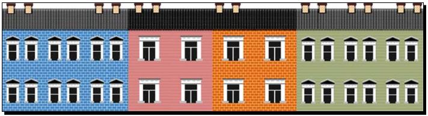
四种不同的建筑(_tile1, _tile2, _tile3, and _tile4)。
void Block::initBlock() {
_tile1 = CCSpriteFrameCache::sharedSpriteFrameCache()
->spriteFrameByName ("building_1.png");
_tile2 = CCSpriteFrameCache::sharedSpriteFrameCache()
->spriteFrameByName ("building_2.png");
_tile3 = CCSpriteFrameCache::sharedSpriteFrameCache()
->spriteFrameByName ("building_3.png");
_tile4 = CCSpriteFrameCache::sharedSpriteFrameCache()
->spriteFrameByName ("building_4.png");
两种屋顶的贴图(_roof1 and _roof2)：
_roof1 = CCSpriteFrameCache::sharedSpriteFrameCache()
->spriteFrameByName ("roof_1.png");
_roof2 = CCSpriteFrameCache::sharedSpriteFrameCache()
->spriteFrameByName ("roof_2.png");
Next we create and distribute the various CCSprite tiles that form our building:
// create tiles
int i;
_wallTiles = CCArray::createWithCapacity(20);
_wallTiles->retain();
_roofTiles = CCArray::createWithCapacity(5);
_roofTiles->retain();
CCSprite * tile;
// place CCSprite tiles （每个建筑物5列4行）
for (i = 0; i < 5; i++) {
tile = CCSprite::createWithSpriteFrameName("roof_1.png");
tile->setAnchorPoint(ccp(0, 1));
tile->setPosition(ccp(i * _tileWidth, 0));
tile->setVisible(false);
this->addChild(tile, kMiddleground, kRoofTile);
_roofTiles->addObject(tile);
for (int j = 0; j < 4; j++) {
tile = CCSprite::createWithSpriteFrameName
("building_1.png");
tile->setAnchorPoint(ccp(0, 1));
tile->setPosition(ccp(i * _tileWidth, -1 * (_tileHeight * 0.47f + j * _tileHeight)));
tile->setVisible(false);
this->addChild(tile, kBackground, kWallTile);
_wallTiles->addObject(tile);
}
}
一个Block由20个存储在_wallTiles中的CCSprite和5个存储在_roofTiles中的CCSprite组成。即一个Block对象，5个瓷砖宽，4个瓷砖高。I made the decision that no building in the game would exceed this size. If you decide to change this, then here is where you will make your changes.
initBlock还将创建5个烟囱精灵，放在屋顶上。These will be spread out later according to the building type and could be very easily turned into obstacles for our _player. We also create the animation actions for the puffs of smoke, here inside initBlock.
Moving on to our new setupBlock method, this is where the unnecessary tiles and chimneys are turned invisible and where we spread out the visible chimneys. We begin the method as follows:
void Block::setupBlock (int width, int height, int type) {
this->setPuffing(false);
_type = type;
_width = width * _tileWidth;
// add the roof height to the final height of the block
_height = height * _tileHeight + _tileHeight * 0.49f;
this->setPositionY(_height);
CCSpriteFrame * wallFrame;
CCSpriteFrame * roofFrame = rand() % 10 > 6 ? _roof1 : _roof2;
int num_chimneys;
float chimneyX[] = {0,0,0,0,0};
Then based on building type, we give different x positions for the chimney sprites and determine the texture we’ll use on the wall tiles.
switch (type) {
case kBlockGap:
this->setVisible(false);
return;
case kBlock1:
wallFrame = _tile1;
chimneyX[0] = 0.2f;
chimneyX[1] = 0.8f;
num_chimneys = 2;
break;
case kBlock2:
wallFrame = _tile2;
chimneyX[0] = 0.2f;
chimneyX[1] = 0.8f;
chimneyX[2] = 0.5f;
num_chimneys = 3;
break;
case kBlock3:
wallFrame = _tile3;
chimneyX[0] = 0.2f;
chimneyX[1] = 0.8f;
chimneyX[2] = 0.5f;
num_chimneys = 3;
break;
case kBlock4:
wallFrame = _tile4;
chimneyX[0] = 0.2f;
chimneyX[1] = 0.5f;
num_chimneys = 2;
break;
}
The method then proceeds to position the visible chimneys. We finally move to texturing the building. The logic to texture the roof and wall tiles is the same; for instance, here’s how the walls are tiled by changing the texture of each CCSprite wall through the setDisplayFrame method, and then turning unused tiles invisible:
count = _wallTiles->count();
for (i = 0; i < count; i++) {
tile = (CCSprite *) _wallTiles->objectAtIndex(i);
if (tile->getPositionX() < _width && tile
->getPositionY() > -_height) {
tile->setVisible(true);
tile->setDisplayFrame(wallFrame);
} else {
tile->setVisible(false);
}
}
}
When we instantiate a Block in initBlock, we create a 5 x 4 building made out of wall tiles and roof tiles, each a CCSprite. And when we need to turn this building into a 3 x 2 building, or 4 x 4 building, or whatever, we simply turn the excess tiles invisible at the end of setupBlock.
Before we move to the parallax effect logic, there is something I wanted to talk about related to the layering of our _gameBatchNode, which you’ll recall is a CCSpriteBatchNode object.
If you go to the static create method inside Terrain.cpp, you will notice that the object is still created with a reference to a blank.png texture:
terrain->initWithSpriteFrameName("blank.png")
In fact the same 1x1 pixel image used in the test version is now in our sprite sheet, only this time the image is transparent. This is a bit of a hack, but necessary, 因为如果一个精灵的纹理源与创建Batch node的源相同，则精灵只能被放入batch node。Now Terrain is just a container, it has no texture. But by setting its “blank” texture to something contained in our sprite sheet, we can place _terrain inside _gameBatchNode. The same thing is done with the Block class, which now, in the final version of the game, behaves as another textureless container. It will contain the various CCSprites for the wall and roof tiles as well as chimneys and puff animations as its children.
The organization of the layers inside our _gameBatchNode object can seem complex and at times even absurd. After all in the same node we have a foreground “layer” of lampposts, a middle-ground “layer” of buildings, and a background “layer” containing a cityscape. The player is also placed in the background but on top of the cityscape. And not only that but all three layers are moved at different speeds to create our parallax effect, and all this inside the same CCSpriteBatchNode! But the amount of code this arrangement saves us justifies any confusion we might have at times keeping the batch node organized. Now we can animate the puffs of smoke, for instance, and never worry about keeping them “attached” to their respective chimney sprite as the terrain scrolls to the left. The container will take care of keeping things together.
一个特殊的CCNode：CCParallaxNode。CCParallaxNode helps create parallax effect with finite layers, or finite scrolling, meaning you can use it if your game screen has a limit to how much it can scroll each way. Implementing CCParallaxNode to a game screen that can scroll indefinitely, such as the one in Victorian Rush Hour, usually requires more effort than it takes to build your own effect.
A parallax effect is created by moving objects at different depths by different speeds. The farther a layer appears from the screen, the slower its speed should be. In a game this usually means that the player sprite’s speed is fractioned and sent to all the layers that appear behind it, and multiplied for the layers that appear in front of the player sprite.
游戏中的时差滚动效果发生在主循环：
// update parallax
if (_player->getVector().x > 0) {
_background->setPositionX(_background->getPosition().x - _player->getVector().x * 0.25f);
先移动_background精灵，which contains the cityscape texture repeated three times along the x axis, 速度是_player的四分之一。
The _background scrolls to the left, and as soon as the first cityscape texture is off the screen, we shift the entire _background container to the right at precisely the spot where the second cityscape texture would appear if allowed to continue. We get this value by subtracting where the sprite would be from the total width of the sprite:
float diffx;
if (_background->getPositionX() < -_background ->getContentSize().width) {
diffx = fabs(_background->getPositionX()) - _background->getContentSize().width;
_background->setPositionX(-diffx);
}
So in effect we only ever scroll the first texture sprite inside the container.
A similar process is repeated with the _foreground sprite and the three lamppost sprites it contains, only the _foreground moves at four times the speed of the _player sprite:
_foreground->setPositionX(_foreground->getPosition().x - _player->getVector().x * 4);
if (_foreground->getPositionX() < -_foreground ->getContentSize().width * 4) {
diffx = fabs(_foreground->getPositionX())
- _foreground ->getContentSize().width * 4;
_foreground->setPositionX(-diffx);
}
And we also employ our cloud sprites in the parallax effect. Since they appear behind the cityscape, so even farther away from the _player, the clouds move at an even lower rate (0.15):
int count = _clouds->count();
CCSprite * cloud;
for (int i = 0; i < count; i++) {
cloud = (CCSprite *) _clouds->objectAtIndex(i);
cloud->setPositionX(cloud->getPositionX() - _player
->getVector().x * 0.15f);
if (cloud->getPositionX() + cloud
->boundingBox().size.width * 0.5f < 0 )
cloud->setPositionX(_screenSize.width + cloud
->boundingBox().size.width * 0.5f);
}
}
使用一种特殊的层CCLayer——CCMenu。
CCMenu是CCMenuItemSprite的集合。The layer is responsible for distributing its items as well as tracking touch events on all items.
In GameLayer.cpp, scroll down to the createGameScreen method. We’ll add the new logic to the end of this method. First, create the menu item for our start game button:
CCSprite * menuItemOn;
CCSprite * menuItemOff;
menuItemOn = CCSprite::createWithSpriteFrameName("btn_new_on.png");
menuItemOff = CCSprite::createWithSpriteFrameName("btn_new_off.png");
CCMenuItemSprite * starGametItem = CCMenuItemSprite::create(
menuItemOff,
menuItemOn,
this,
menu_selector(GameLayer::startGame)
);
Next we add the tutorial button:
menuItemOn = CCSprite::createWithSpriteFrameName("btn_howto_on.png");
menuItemOff = CCSprite::createWithSpriteFrameName("btn_howto_off.png");
CCMenuItemSprite * howToItem = CCMenuItemSprite::create(
menuItemOff,
menuItemOn,
this,
menu_selector(GameLayer::showTutorial));
Then it’s time to create the menu:
_mainMenu = CCMenu::create(howToItem, starGametItem, NULL);
_mainMenu->alignItemsHorizontallyWithPadding(120);
_mainMenu->setPosition(ccp(_screenSize.width * 0.5f, _screenSize.height * 0.54));
this->addChild(_mainMenu, kForeground);
对齐方式：alignItemsHorizontally, alignItemsHorizontallyWithPadding, alignItemsVertically, alignItemsVerticallyWithPadding, alignItemsInColumns, alignItemsInRows。The items items appear in the order they are passed to the CCMenu constructor.
回调函数：
void GameLayer::startGame (CCObject* pSender) {
_tutorialLabel->setVisible(false);
_intro->setVisible(false);
_mainMenu->setVisible(false);
_jam->runAction(_jamMove);
SimpleAudioEngine::sharedEngine()->playEffect("start.wav");
_terrain->setStartTerrain ( true );
_state = kGamePlay;
}
void GameLayer::showTutorial (CCObject* pSender) {
_tutorialLabel->setString("Tap the screen to make the player jump.");
_state = kGameTutorialJump;
_jam->runAction(_jamMove);
_intro->setVisible(false);
_mainMenu->setVisible(false);
SimpleAudioEngine::sharedEngine()->playEffect("start.wav");
_tutorialLabel->setVisible(true);
}
The unspoken rule of game tutorials is: make it playable. And that’s what we’ll attempt to do here.
We’ll create a game state for our tutorial, and we’ll add a CCLabelTTF object to our stage, and make it invisible unless the tutorial state is on. We’ll use the CCLabelTTF to display our tutorial text.
Back to the createGameScreen method, add the following lines to create our CCLabelTTF object:
_tutorialLabel = CCLabelTTF::create("", "Times New Roman", 80);
_tutorialLabel->setPosition(ccp(_screenSize.width * 0.5f,
_screenSize.height * 0.6f) );
this->addChild(_tutorialLabel, kForeground);
_tutorialLabel->setVisible(false);
We add four states to our enumerated list of game states. These will represent the different steps in our tutorial:
typedef enum {
kGameIntro,
kGamePlay,
kGameOver,
kGameTutorial,
kGameTutorialJump,
kGameTutorialFloat,
kGameTutorialDrop
} GameState;
The first tutorial state, kGameTutorial, acts as a separator from all other game states. So if the value for _state is greater than kGameTutorial, we are in tutorial mode.
Depending on the mode, we display a different message and we wait on a different condition to change to a new tutorial state.
If you recall, our showTutorial method starts with a message telling the player to tap the screen to make the sprite jump:
_tutorialLabel->setString("Tap the screen to make the player jump.");
_state = kGameTutorialJump;
Then in the update method, at the end of the method, we start adding the lines that will display the rest of our tutorial information. First if the player sprite is in the midst of a jump and has just begun falling:
if (_state > kGameTutorial) {
if (_state == kGameTutorialJump) {
if (_player->getState() == kPlayerFalling && _player
->getVector().y < 0) {
_player->stopAllActions();
_jam->setVisible(false);
_jam->stopAllActions();
_running = false;
_tutorialLabel->setString("While in the air, tap the screen to float.");
_state = kGameTutorialFloat;
}
As you can see, we let the player know that another tap will open the umbrella and cause the sprite to float.
Next as the sprite is floating, when it reaches a certain distance from the buildings, we inform the player that another tap will close the umbrella and cause the sprite to drop:
} else if (_state == kGameTutorialFloat) {
if (_player->getPositionY() < _screenSize.height * 0.95f) {
_player->stopAllActions();
_running = false;
_tutorialLabel->setString("While floating, tap the screen again to drop.");
_state = kGameTutorialDrop;
}
After that the tutorial is completed, and we show the message that the player may start the game:
```cpp
} else {
_tutorialLabel->setString("That's it. Tap the screen to play.");
_state = kGameTutorial;
}
}
Whenever we change a tutorial state, we pause the game momentarily and wait for a tap. We handle the rest of our logic inside ccTouchesBegan, so we’ll add that next.
Inside ccTouchesBegan, in the switch statement, add the following cases:
case kGameTutorial:
_tutorialLabel->setString("");
_tutorialLabel->setVisible(false);
_terrain->setStartTerrain ( true );
_state = kGamePlay;
break;
case kGameTutorialJump:
if (_player->getState() == kPlayerMoving) {
SimpleAudioEngine::sharedEngine()
->playEffect("jump.wav");
_player->setJumping(true);
}
break;
case kGameTutorialFloat:
if (!_player->getFloating()) {
_player->setFloating (true);
_running = true;
}
break;
case kGameTutorialDrop:
_player->setFloating (false);
_running = true;
break;
Cocos2d-x comes bundled with templates for
projects utilizing either Box2D or Chipmunk. These are so-called 2D physics
engines; the first written in C++ and the second in C.
本书的例子将使用Box2D。The last two games I’ll show you will be developed with that engine, starting with a simple pool game to illustrate all the main points about using Box2D in your projects.
What you will learn:
How to create a project that incorporates Box2D
How to set up and run a Box2D simulation
How to create bodies
How to use the debug draw feature to quickly test your concepts
How to use collision filters and listeners
Let’s start by going over the various steps involved in creating a Box2D project with Cocos2d-x. We begin by firing up Xcode and choosing File| New| Project. This time, we select the cocos2dx_box2dtemplate option.
If you run the project as-is in your iPhone simulator, you should see something like this:
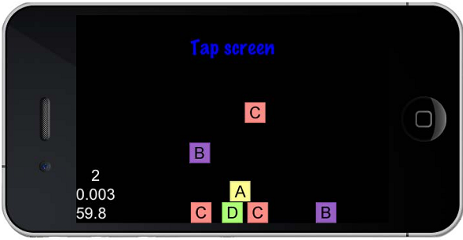
Please understand that the following steps are all optional. I happen not to like the way the Box2D project template is set up:
Go to the folder where you extracted the framework and locate the Testfiles, this time go to samples/TestCpp/Classes/Box2DTestBed. Drag the GLES-Render.h and GLES-Render.cpp files from Box2DTestBed to your project Classes group. Make sure to select Copy items into destination… and make sure you selected your project as the target.
In the HelloWorldScene.h header file, leave the includes in place, but change the class declarations to match this much shorter one:
class HelloWorld : public cocos2d::CCLayer {
public:
~HelloWorld();
HelloWorld();
static cocos2d::CCScene* scene();
void initPhysics();
virtual void draw();
void update(float dt);
private:
b2World* world;
};
Then add this include:
#include "GLES-Render.h"
And add this private member:
GLESDebugDraw * m_debugDraw;
Then in the HelloWorldScene.cpp implementation file replace the lines between using namespace CocosDenshion and the HelloWorld::scene method with these:
#define PTM_RATIO 32
HelloWorld::HelloWorld()
{
this->initPhysics();
scheduleUpdate();
}
HelloWorld::~HelloWorld()
{
delete world;
world = NULL;
delete m_debugDraw;
}
void HelloWorld::initPhysics() {
b2Vec2 gravity;
gravity.Set(0.0f, -10.0f);
world = new b2World(gravity);
// Do we want to let bodies sleep?
world->SetAllowSleeping(true);
world->SetContinuousPhysics(true);
m_debugDraw = new GLESDebugDraw( PTM_RATIO );
world->SetDebugDraw(m_debugDraw);
uint32 flags = 0;
flags += b2Draw::e_shapeBit;
// flags += b2Draw::e_jointBit;
// flags += b2Draw::e_aabbBit;
// flags += b2Draw::e_pairBit;
// flags += b2Draw::e_centerOfMassBit;
m_debugDraw->SetFlags(flags);
}
void HelloWorld::draw()
{
// IMPORTANT:
// This is only for debug purposes
// It is recommend to disable it
CCLayer::draw();
ccGLEnableVertexAttribs( kCCVertexAttribFlag_Position );
kmGLPushMatrix();
world->DrawDebugData();
kmGLPopMatrix();
}
void HelloWorld::update(float dt)
{
world->Step(dt, 8, 1);
}
The GLES-Renderclass is necessary to use the debug draw feature in Box2D. This will draw all the elements from the simulation on the screen. The debug draw object is created inside the initPhysics method alongside the Box2D simulation (b2World). We’ll go over that logic in a moment.
As the comment inside the draw method states, the debug draw feature should be switched off once you’re done developing your game. So, all the lines pertaining to that object, as well as the draw method, should be commented out.
Box2D是一个非常鲁棒的碰撞检测引擎。可以仅作为碰撞检测引擎使用。But the simulation will also process and return a bunch of information derived from the collisions and the interactions between bodies, including how the objects should behave, based on their shapes, mass, and all the forces at play in the simulation.
引擎的核心是b2World。This is the simulation. 向世界填充b2Body对象，and then you step through the simulation with b2World->Step(). You take the results of the simulation and display them to the user through your sprites, by grabbing a b2Body‘s position and rotation and applying them to a sprite.
The debug draw object allows you to see the simulation without using any sprites. A way to quickly test and prototype your game.
多数情况下，物理引擎要求创建一个b2world对象。However, you can get interesting results by managing more than one world object in the same game, for multiple views for instance. But that’s for another book.
对于简单的工程，创建世界的方法如下：
b2Vec2 gravity;
gravity.Set(0.0f, -10.0f);
world = new b2World(gravity);
// Do we want to let bodies sleep?
world->SetAllowSleeping(true);
world->SetContinuousPhysics(true);
m_debugDraw = new GLESDebugDraw( PTM_RATIO );
world->SetDebugDraw(m_debugDraw);
uint32 flags = 0;
flags += b2Draw::e_shapeBit;
// flags += b2Draw::e_jointBit;
// flags += b2Draw::e_aabbBit;
// flags += b2Draw::e_pairBit;
// flags += b2Draw::e_centerOfMassBit;
m_debugDraw->SetFlags(flags);
Box2D有自己的向量结构b2Vec2, and we use it here to create the world’s gravity. The b2World object receives that as its parameter. A simulation does not always require gravity of course; in that case the argument will be a (0, 0) vector.
SetAllowSleeping means that if objects are not moving and are therefore not generating derived data, skip checking for derived data from those objects.
SetContinuousPhysics means we have some fast objects in our hands, which we’ll later point out to the simulation, so it can pay extra attention for collisions. Then we create the debug draw object. This is optional, as I said before. The flags indicate what you wish to see in the drawing. In the previous code we only want to see the shapes of the objects.
Then comes PTM_RATIO, the defined constant that we passed as a parameter to the debug draw. Box2D uses meters instead of pixels for a variety of reasons that are, entirely unnecessary for anyone to know. But keep this one thing in mind: every pixel position value used in the game will be divided by this ratio constant (PTM stands for pixel to meter). If the result from this division ever gets above 10 or below 0.1, increase or decrease the value for PTM_RATIO accordingly.
Though you have some leeway, of course. By all means, play with this value once your game is completed, and pay special attention to the subtle differences in speed (another common value for this ratio is 100).